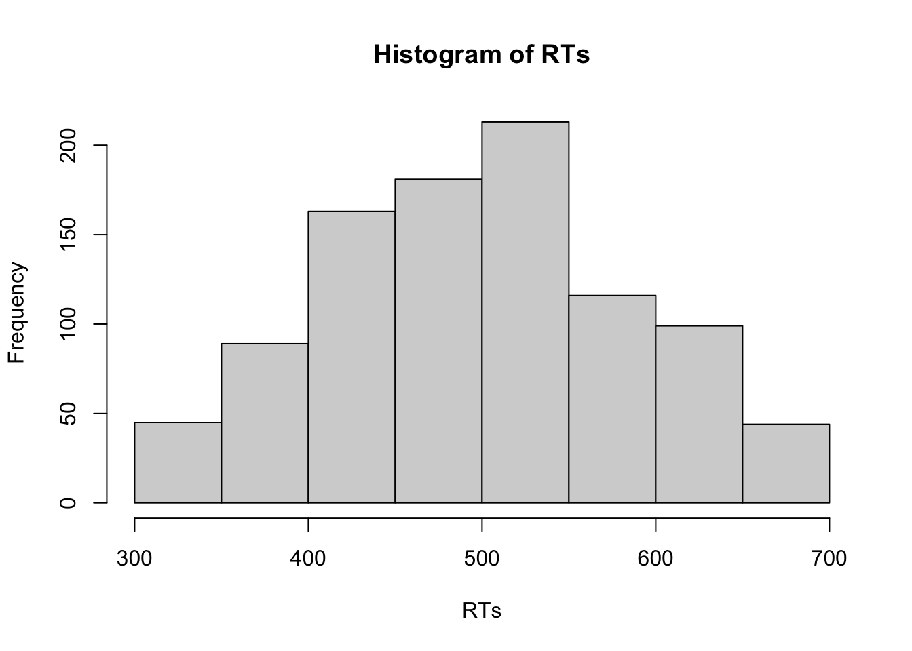
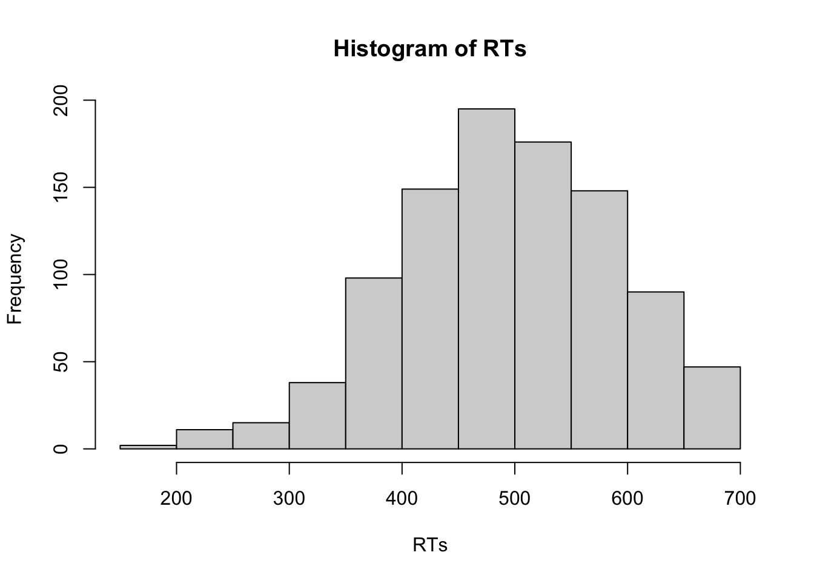
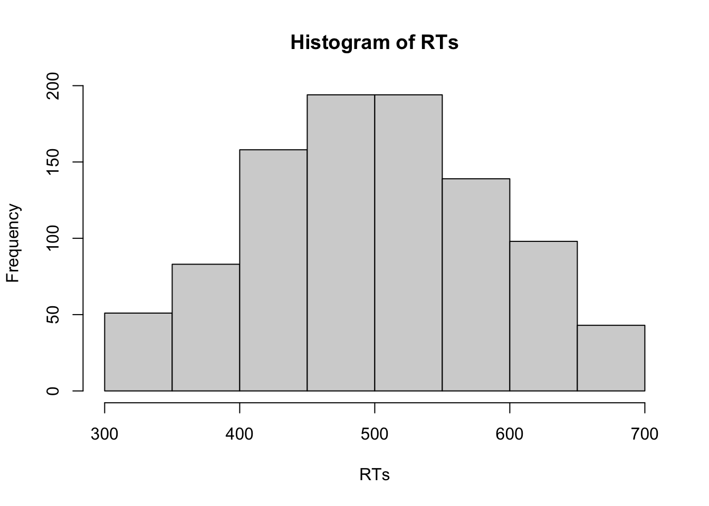

3 Erste Schritte
3.1 Variablen
Sicherlich wollen Sie Ihre Daten nicht nur in der Konsole ausgeben lassen und bearbeiten, sondern auch in Variablen speichern. Variablen sind Bezeichnungen, mit deren Hilfe Sie auf gespeicherte Daten zugreifen. Sobald eine Variable definiert wurde, können Sie immer wieder darauf zugreifen. Variablen werden mit Hilfe des <- Operators definiert.
Sie können sich die Werte dieser Variablen ausgeben lassen, indem Sie die Variablennamen in der Konsole eingeben und Enter drücken.
## [1] 2Jetzt können Sie bereits erste Berechnungen mit Variablen durchführen:
## [1] 5## [1] 6In R lassen sich sämtliche Objekte - nicht nur einzelne Zahlen, sondern auch Datentabellen, Wortlisten oder sogar Ergebnisse komplizierter Analysen - in Variablen speichern. Der Workflow ist so ausgelegt, dass Sie Ergebnisse einer Analyse in einer Variable speichern und von dort aus weiterverarbeiten können, z.B. um APA-konforme Tabellen oder Grafiken zu erstellen oder sich Effektstärkemaße ausgeben zu lassen. Im weiteren Verlauf des Kurses lernen Sie andere Datentypen kennen, die in Variablen gespeichert werden können.
Achtung: Wenn Sie eine Berechnung mit einer Variable durchführen und das Ergebnis dieser Berechnung speichern möchten, müssen Sie es wieder eine Variable zuweisen - es wird nicht automatisch gespeichert!
Wenn Sie sich jetzt x und z ausgeben lassen, sehen Sie, dass sich nichts an x geändert hat - das Ergebnis der Berechnung wurde nicht abgespeichert. In der Variable z hingegen sehen Sie das Ergebnis Ihrer Berechnung.
## [1] 2## [1] 20x, y und z sind denkbar schlechte Variablennamen! Gute Variablennamen sprechen, d.h. dass der Name eine Variable verrät, was sich “in” dieser Variable verbirgt. Deswegen sollten Sie sich immer bemühen, möglichst klare und eindeutige Variablennamen zu vergeben.
# Beispiele für gute Variablennamen
durchschnittliches_Alter <- 23
MW_Alter <- 23
durchschnittliches_Evaluationsergebnis_KursA <- 2
MW_Evaluationsergebnis_KursA <- 2Scheuen Sie sich nicht vor langen Variablennamen! Je besser und klarer Sie Ihre Variablen definieren, desto einfacher wird es sowohl Ihnen als auch anderen fallen, Ihren Code nachzuvollziehen. Besonders einfach lesbar sind längere Variablennamen, wenn Sie unterschiedliche Elemente des Variablennamens mit einem Unterstrich trennen. Diese Konvention wird auch in diesem Kurs verwendet.
3.2 Vektoren
Jede Spalte eines Datensatzes ist ein Vektor. In einem Vektor befinden sich mehrere Elemente eines Datentyps, also z.B. mehrere Zahlen oder mehrere Wörter. Vektoren werden mit Hilfe des “combine”-Operators c erstellt.
Mit jedem Datentyp können Sie unterschiedliche Operationen durchführen. Um sich den Datentyp eines Vektors anzeigen zu lassen, können Sie die Funktion mode verwenden.
## [1] "numeric"3.2.1 Datentyp numeric
Mit Vektoren vom Typ numeric können Sie verschiedene mathematische Operationen durchführen. Sie können diese Vektoren addieren, multiplizieren, usw. Wenn Sie eine Operation wie *2 auf den Vektor anwenden, wird diese Operation auf alle Elemente des Vektors angewendet.
## [1] 2 4 6 8 10 12 14 16 18 20Wenn Sie hingegen zwei gleich lange Vektoren haben, wird jedes i-te Element des ersten Vektors mit dem i-ten Element des zweiten Vektors verrechnet. Das Element an Position 1 im einen Vektor wird dann mit dem Element an Position 1 im anderen Vektor gepaart, das Element an Position 2 im einen Vektor mit dem Element an Position 2 im anderen Vektor – und so weiter.
punkte_MC_Fragen <- c(5, 2, 2, 4, 3, 2, 1, 0, 1, 4)
punkte_offene_Fragen <- c(3, 4, 5, 0, 2, 3, 1, 3, 5, 1)
klausurergebnis <- punkte_MC_Fragen + punkte_offene_Fragen
klausurergebnis## [1] 8 6 7 4 5 5 2 3 6 53.2.2 Datentyp character
Wenn Sie in einer Variable Text abspeichern wollen, erschaffen Sie eine Variable vom Datentyp character. Test wird mit doppelten oder einfachen Anführungszeichen angegeben:
## [1] "Alpha"## [1] "Beta"## [1] "character"Mit Vektoren des Typs character können Sie natürlich keine mathematischen Operationen durchführen. Sie sind aber nützlich, um bestimmte Daten zu kodieren, wie bspw. das Geschlecht oder das Studienfach von Versuchspersonen.
3.2.3 Datentyp logical
Der Datentyp logical kodiert nur binäre Informationen - diese sind entweder TRUE oder FALSE.
## [1] TRUE## [1] FALSE## [1] "logical"Dabei werden TRUE und FALSE als logische Bedingungen interpretiert, die erfüllt oder nicht erfüllt sein können. Vektoren dieses Datentyps sind für die Datenaufbereitung unglaublich nützlich! Mit Hilfe eines Vektors vom Typ logical können sie beispielsweise kodieren, welche Versuchspersonen die Studie vollständig abgeschlossen haben oder ob einzelne Beobachtungen Ausreißer darstellen. Sie werden diesen Datentyp häufig benötigen, wenn Sie in Datentabellen einzelne Fälle auswählen oder Versuchspersonen ausschließen möchte. Hierbei wird dann jeweils im Einzelfall überprüft, welche Fälle eine gewünschte Bedingung erfüllen (z.B. maximal 30 Minuten zur Bearbeitung eines Tests gebraucht haben) und daher in den weiteren Analysen eingeschlossen werden.
# Hier wird festgehalten, welche Versuchspersonen (id) die Studie
# vollständig abgeschlossen haben (Studie_abgeschlossen)
id <- c(1:10)
Studie_abgeschlossen <- c(TRUE, TRUE, FALSE, TRUE, TRUE, FALSE, FALSE, TRUE, TRUE, TRUE) Mit logischen Werten kann man die logischen Operationen UND (&), ODER (| ) und NICHT (! ) umsetzen. UND und ODER
verknüpfen jeweils zwei logische Bedingungen (sprich: zwei logische Werte, also TRUE/FALSE) miteinander und geben selbst einen logischen Wert zurück.
Die Verknüpfung UND ergibt dann TRUE, wenn beide Bedingungen erfüllt sind, d.h. nur wenn die erste und die zweite Bedingung jeweils TRUE sind.
## [1] TRUE## [1] FALSE## [1] FALSEeinen logischen Wert zurück.
Die Verknüpfung ODER ergibt dann TRUE, wenn mindestens eine der beiden Bedingungen erfüllt ist, d.h. wenn die erste oder die zweite Bedingung oder beide Bedingungen TRUE sind. Ganz wichtig: ODER gibt auch dann TRUE aus, wenn beide Bedingungen erfüllt sind!
## [1] TRUE## [1] TRUE## [1] FALSEDas logische NICHT invertiert eine logische Variable: Aus TRUE wird FALSE und umgekehrt. Das ist hier noch etwas abstrakt, wird aber später in den Kapiteln zur Datenaufbereitung noch klarer.
## [1] FALSE## [1] TRUE3.2.4 Datentyp factor
Variablen vom Datentyp factor sind nützlich, um kategoriale Variablen zu kodieren. Dabei wird zunächst ein Vektor vom Typ ‘numeric’ erstellt. Den einzelnen Werten dieses numerischen Vektors werden dann kategoriale Bezeichnungen zugewiesen.
Bedingung <- c (0, 1, 1, 0, 1, 0, 0, 1)
Vektor_factor <- factor(x = Bedingung,
levels = c(0,1),
labels = c("Kontrollgruppe", "Experimentalgruppe"))
Vektor_factor## [1] Kontrollgruppe Experimentalgruppe Experimentalgruppe
## [4] Kontrollgruppe Experimentalgruppe Kontrollgruppe
## [7] Kontrollgruppe Experimentalgruppe
## Levels: Kontrollgruppe Experimentalgruppe## [1] "numeric"Dazu verwenden Sie die Funktion factor. Dieser Funktion übergeben Sie den numerischen Vektor Bedingung und definieren anschließend die Stufen des Faktors mit Hilfe des Argument levels (hier 0 und 1) sowie die Bezeichnungen mit Hilfe des Argument labels (hier Kontrollgruppe und Experimentalgruppe).
Es ist immer sinnvoll, Variablen als Faktoren zu definieren, wenn sie endliche Ausprägungen haben. Experimentelle Bedingungen, Messzeitpunkte oder das Geschlecht von Versuchspersonen sind typische Kandidaten, die als Vektoren vom Typ factor gespeichert werden. Der Vorteil dieses Variablentyps besteht darin, dass Sie dort die Zuordnung von numerischen zu verbalen Bezeichnungen direkt vornehmen können und nachher nicht mehr nachschlagen müssen, ob “0” oder “1” nun die Experimentalgruppe kodiert. Spätestens bei der Auswertung Ihrer Daten sollten Sie solche Variablen also immer als factor rekodieren.
Achtung: Sie können mit Faktoren keine mathematischen Operationen durchführen, auch wenn ihnen eigentlich numerische Kodierungen zugrunde liegen. In R werden Vektoren vom Variablentyp factor diesbezüglich ebenso wie Vektoren vom Variablentyp character behandelt.
3.2.5 Datentyp NA
Ein Vektor besteht in der Regel nicht nur aus Variablen vom Datentyp NA. In echten Datensätzen werden Sie aber immer mal wieder fehlende Daten haben. Diese werden in R als NA kodiert.
Achtung: In anderer Statistiksoftware wie z.B. SPSS hat sich die Konvention entwickelt, fehlende Werte nicht mit “NA”, sondern mit bestimmten nicht beobachtbaren numerischen Werten wie “-9” oder “-99” zu beschreiben. Wenn Sie mit einem solchen Datensatz arbeiten, der zuvor in einer anderen Statistiksoftware bearbeitet wurde, sollten Sie immer überprüfen, ob fehlende Werte anhand solcher numerischen Werte kodiert sind und diese als “NA” rekodieren.
3.3 Auswahl von Vektorelementen
Sie können auf einzelne Elemente eines Vektor zugreifen, indem Sie den Operator [] verwenden. In die eckigen Klammern wird die Position des Elements eingefügt, das Sie auswählen möchte. Dieses Vorgehen wird Indizierung genannt.
## [1] 9Sie können auch eine sogenannte Negativindizierung durchführen, d.h. im Index festhalten, welches Element Sie nicht auswählen möchten.
## [1] 3 7 0 1 1 4 5Selbstverständlich können Sie auch gleich mehrere Elemente auswählen. Wenn Sie z.B. alles vom zweiten bis fünften Element auswählen wollen, können Sie das im Index so vermerken: [2:5]. Ganz allgemein gilt: Die Zahl vor dem Doppelpunkt gibt an, wo die Indizierung beginnt, und die Zahl nach dem Doppelpunkt gibt an, wo die Indizierung endet.
## [1] 7 9 0 1Wenn Sie mehrere Elemente auswählen möchten, die nicht direkt nebeneinander stehen, müssen Sie diese mit dem “combine”-Operator c verknüpfen:
## [1] 7 4Die so ausgewählten Daten können Sie natürlich wieder in einer neuen Variable speichern:
3.4 Logische Vergleiche
Logische Vergleiche können genutzt werden, um bestimmte Fälle - z.B. einzelne Versuchspersonen - auszuwählen. Welche logischen Vergleich für einen Datentyp sinnvoll sind, hängt von diesem Datentyp ab.
3.4.1 Datentyp numeric
Wenn Sie Daten vom Typ numeric haben, können Sie numerische Vergleiche durchführen. Sie können zum Beispiel überprüfen, welche Ihrer Versuchspersonen älter als 18 Jahre sind. Dazu verwenden Sie den logischen Operator >=, den Sie als “größer oder gleich” interpretieren können (analog dazu liest sich <= als “kleiner oder gleich”.)
## [1] TRUE TRUE TRUE TRUE TRUE FALSE TRUE TRUEBei numerischen Vektoren können Sie folgende logischen Vergleiche durchführen: (a) gleich (==), (b) größer (>), (c) kleiner (<), (d) größer gleich (>=), (e) kleiner gleich (<=) oder (f) ungleich (!=). Wenn Sie einen logischen Vergleich mit einem gesamten Vektor durchführen, wird für jedes einzelne Element überprüft, ob es der logischen Bedingung entspricht (TRUE) oder nicht (FALSE).
## [1] FALSE FALSE FALSE FALSE FALSE TRUE FALSE FALSE## [1] FALSE FALSE FALSE FALSE FALSE FALSE FALSE FALSE3.4.2 Datentyp character
Vektoren vom Typ character lassen sich darauf überprüfen, ob diese identisch mit einer bestimmten Bedingung sind.
# Hier wird überprüft, welche Versuchspersonen Psychologie studieren
Studienfach <- c("Psychologie", "Medizin", "Informatik", "Sportwissenschaft", "Biologie")
Studienfach == "Psychologie"## [1] TRUE FALSE FALSE FALSE FALSE3.4.3 Datentyp factor
Dieser logische Vergleich lässt sich auch mit Daten vom Typ factor durchführen.
Bedingung <- c (0, 1, 1, 0, 1, 0, 0, 1)
Bedingung <- factor(x = Bedingung,
levels = c(0,1),
labels = c("Kontrollgruppe", "Experimentalgruppe"))
# Hier wird überprüft, welche Versuchspersonen der Experimentalgruppe angehören
Bedingung == "Experimentalgruppe"## [1] FALSE TRUE TRUE FALSE TRUE FALSE FALSE TRUE3.4.4 Rekodieren von Variablen mit Hilfe logischer Vergleich
Sie werden logische Vergleiche häufig anwenden, um Daten zu rekodieren. Schauen Sie sich dazu die folgenden Beispiele an.
Mit Hilfe logischer Vergleiche können Sie überprüfen, ob fehlende Werte nicht mit “NA”, sondern mit “-9” kodiert wurden, um diese anschließend zu rekodieren.
## [1] FALSE FALSE FALSE FALSE FALSE FALSE TRUESie können das Ergebnis dieses logischen Vergleichs nun nutzen, um alle Werte, die als -9 kodiert wurden, zu rekodieren. Dazu speichern Sie das Ergebnis des logischen Vergleichs einfach in einer neuen Variable ab.
Im nächsten Schritt benutzen Sie die neue erstellte Variable vom Typ logical, um alle Werte des Vektors Testwerte, die den Wert “-9” haben, durch “NA” zu ersetzen.
## [1] 80 57 93 85 72 65 NAGanz ähnlich können Sie bei einem Reaktionszeitexperiment alle Trials entfernen, in denen Versuchspersonen sehr lange mit ihrer Reaktion gebraucht haben, d.h. in denen sie möglicherweise mit ihrer Aufmerksamkeit abgeschweift sind.
# Als erstes werden 1000 Trials einer Versuchsperson simuliert
RTs <- rnorm(n = 1000, mean = 500, sd = 100)
hist(RTs)
# In diesem Vektor von Reaktionszeiten werden alle RTs, die länger als 700 ms sind, entfernt
Ausreisser <- RTs > 700
RTs[Ausreisser] <- NA
hist(RTs)
Für die ganz Eiligen: Sie können dies auch in einem einzigen Schritt durchführen, es ist dann aber fehleranfälliger. Dazu geben Sie den logischen Vergleich direkt als Index an:
RTs <- rnorm(n = 1000, mean = 500, sd = 100)
# Hier wird der logische Vergleich direkt als Index von RTs genutzt.
RTs[RTs > 700] <- NAAlternativ könnten Sie Extremwerte natürlich durch einen sinnvollen Maximalwert ersetzen. Beispielsweise lassen sich Reaktionszeiten, die länger als 700 ms sind, auf 700 ms “deckeln”.
RTs <- rnorm(n = 1000, mean = 500, sd = 100)
# Hier wird der logische Vergleich direkt als Index von RTs genutzt.
RTs[RTs > 700] <- 700Sie können auch mehrere logische Vergleiche kombinieren. In Reaktionszeitexperimenten wollen Sie meist extrem langsame sowie extrem schnelle Durchgänge ausschließen, weil Sie nicht sicher sein können, ob die Versuchspersonen vorschnell reagiert haben (extrem schnelsl) oder mit ihren Gedanken nicht bei der Sache waren (extrem langsam). Dazu können Sie mehrere logische Vergleiche kombinieren.
# Als erstes werden 1000 Trials einer Versuchsperson simuliert
RTs <- rnorm(n = 1000, mean = 500, sd = 100)
# Dann werden untere und obere Grenzen als Variablen definiert. Dies hat den
# Vorteil, dass Sie einfach diese Variablen im Code anpassen können, wenn Sie
# die Kriterien zur Ausreißeranalyse anpassen möchten.
untere_Grenze <- 300
obere_Grenze <- 700
# In diesem Vektor von Reaktionszeiten werden alle RTs, die schneller als 200 ms
# oder länger als 700 ms sind, entfernt. Dazu wird der logische ODER-Operator
# benötigt; es sollen solche Trials identifiziert werden, die < 300 ms ODER
# > 700 ms sind.
Ausreisser <- (RTs > obere_Grenze | RTs < untere_Grenze)
RTs[Ausreisser] <- NA
# Im Histogramm ist zu sehen, dass sowohl sehr schnelle als auch sehr langsame
# Trials aus den Daten entfernt wurden.
hist(RTs)